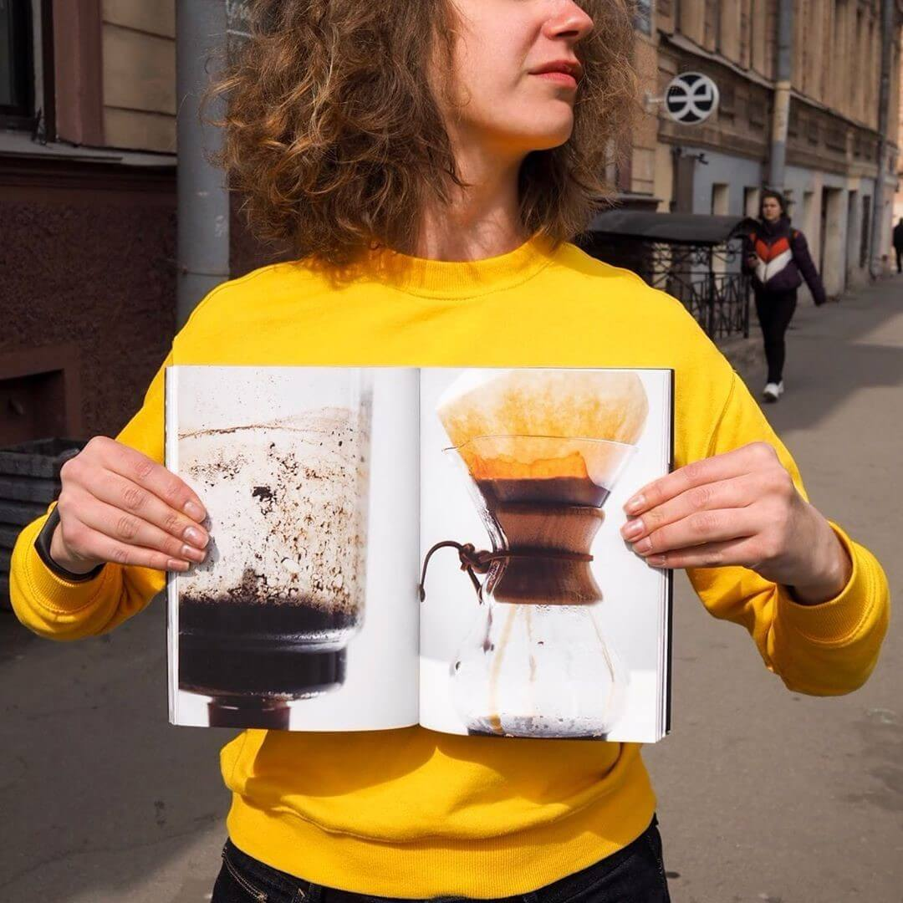

Choroby stawów to nie wyrok. Osobiste doświadczenie: zwyciężyłam reumatoidalne zapalenie stawów, wbrew wszelkim przewidywaniom.
Witam, mam na imię Anna, mam 31 lat. Ponad sześć lat temu zdiagnozowano u mnie reumatoidalne zapalenie stawów.

Tak, problemy ze stawami to nie tylko o osobach starszych. Wszyscy jesteśmy zagrożeni, niezależnie od wieku i płci.
Dzisiaj wszyscy wiedzą o raku, HIV, AIDS... o tym, że ludzkość nieustannie poszukuje sposobów na ich całkowite wyleczenie. Ale diagnoza reumatoidalnego zapalenia stawów, niestety, nie często się mówi. A leków nie szukają. Chociaż każdy chory na RZS wie: pozbyć się choroby całkowicie jest niemożliwe. Cóż, przynajmniej tak mówią nam "lekarze".
I mogę zgadywać, z czym jest związane to "milczenie". Lek na RZS już istnieje. Znalazłam go i przetestowałam na sobie.
Teraz lekarze, z którymi zdarzyło mi się spotykać przez lata cierpienia, wzruszają rękami ze zdziwieniem: wydarzył się cud - nic inaczej! Reumatoidalne zapalenie stawów się nie leczy! Niby, dziewczyno, twój przypadek to fenomen, trzeba panią zdać w instytut, "na eksperymenty".
Jeszcze bardziej zszokuję niedoszłych eskulapów: nie jestem sama, są nas tysiące. Zostali wyleczeni nie tylko "beznadziejni" pacjenci z zapaleniem stawów. Ogromna liczba osób z różnymi zwyrodnieniowymi chorobami stawów wróciła do pełnoprawnego, aktywnego życia. Ale wszystko po kolei.
A więc, jak powiedziałam, wszystko zaczęło się sześć lat temu.
Pierwszym nieprzyjemnym "sygnałem" była poranna sztywność w rękach. Lekarze twierdzili, że wszystkiemu winna jest praca przy komputerze.
Później zaczęły boleć nie tylko ręce, ale i nogi. Wstawanie z łóżka stało się codzienną torturą - pierwsze 20-40 minut po przebudzeniu wydawały mi się koszmarem. Ból w rękach rozprzestrzenił się do tego stopnia, że nie mogłam się już samodzielnie ubrać, dopóki nie zadziała środek przeciwbólowy.
Wizyty do lekarzy i wyniki badań w końcu doprowadziły mnie do reumatologa. Starsza lekarka zostawała przy swoim: "Kochanie, ubieraj się ciepło i nie wymyślaj. Nie masz żadnego reumatoidalnego zapalenia stawów". Dwa lata później wpadłam na wizytę z tą babcią, a ona przyznała się do błędu: "Zdarza się nawet tak"
Takich lekarzy ani jeden ani dwa. Uwierzcie mi, doświadczonemu pacjentowi reumatologów, w tej dziedzinie medycyny panuje kompletna profanacja. Miałam szczęście trafić do profesjonalisty. Ale zanim to się stało, tysiąc razy słyszałam przysłowiowe: "Zapalenie stawów się nie leczy. Naucz się z nim żyć."
Jakie bzdury?! Niech pani sama się nie leczy.
Mam dopiero 25 lat. Jestem młoda i mam wiele planów. Postanowiłam za wszelką cenę znaleźć środek, który przywróci mi pełne życie.

Niedługo przed tym, jak zachorowałam na RZS, rzuciłam dawną pracę i zostałam baristą. Uwielbiałam ten zawód. Miałam już biznesplan na kilka następnych lat. Ale rozpacz ogarniała coraz częściej. Raz po raz wykonując swoją pracę, wracałam do tego, że nie mogłam samodzielnie podnieść filiżanki ze stołu. Po prostu nie mam wystarczającej siły fizycznej, aby kontynuować robić to, co kocham.
Marzeniu być!
Teraz budzę się codziennie o 6 rano (bez środków przeciwbólowych) i idę do pracy do swojej ulubionej kawiarni "Choco Bean" . Sam z wielką przyjemnością (nie odczuwając bólu) gotuję drinki dla moich klientów. I nawet sama podnoszę filiżanki. I nie tylko je!
Tak, jak wspomniałam wyżej, miałam szczęście znaleźć dobrego lekarza. Na wizytę czekałem trzy miesiące. Aby uniknąć wielokrotnego wzrostu liczby klientów, lekarz ten poprosił nie wspominać jego imienia w artykule. Jest jednym z nielicznych, którzy wbrew omszałej opinii publicznej mówi: "Zapalenie stawów leczy się!" i wzmacnia swoje słowa tysiącami przykładów z własnej praktyki lekarskiej. Tutaj, na przykład, przed państwem jestem żywym potwierdzeniem tego, że RZS można wyleczyć.
Po przejściu wszystkich mąk, jaki ta choroba niesie, mam wielkie współczucie dla ludzi z bolącymi stawami. I rozumiem, że nie każdy będzie "twardym orzechem do zgryzienia", tak jak ja. Ilu ludzi zostało przekonanych przez pseudo-lekarzy, że ból od teraz jest integralną częścią ich życia? Pospieszę, aby wybawić państwa z kilkumiesięcznego czekania w kolejce na wizytę: wyleczyłam RA za pomocą .
Prawdopodobnie słyszałeś o chondroprotektorach. nie jest twoim zwykłym środkiem chondroprotekcyjnym. Mówi się o nim jako o jedynym środku chondroprotekcyjnym piątej generacji. Nie tylko chroni stawy przed zniszczeniem. Ponadto, łagodzi ból i stany zapalne, działając na zasadzie NSLPZ i będąc produktem całkowicie naturalnym.

W całym artykule starałam się zgrabnie ominąć temat zmowy aptekarskiej. Ale ten domysł nasuwa się sam: po pierwsze, powszechna propaganda - leczenie zapalenia stawów jest tylko objawowe. Jesteśmy "uzależnieni" na leki przeciwbólowe i inne, które łagodzą tylko objawy. A cios w portfel to najmniejsze zło. Czym są leki przeciwartretyczne z apteki i jakie są ich skutki uboczne - doświadczyłam na własnej skórze.
Po drugie: nie da się znaleźć w aptekach. Rozumiecie sami dlaczego... Ale tutaj chcę państwo uspokoić. Mój lekarz udostępnił link do oficjalnej strony producenta, gdzie on sam kupuje lek dla swoich klientów. nadaje się do leczenia szerokiej gamy chorób stawów - od zapalenia stawów i artrozy po tymczasowe urazy.
ZamówWiem z pierwszej ręki, jak cenne są słowa wsparcia w codziennej walce z własnym ciałem. I jak ważne jest, aby nie tracić nadziei. Dlatego chcę zakończyć moją historię słowem pożegnalnym - nigdy nie poddawaj się. Nie wierz w to, co mówią, pomimo popularności tej opinii. Idź do celu, miej nadzieję na najlepsze i nie opuszczaj rąk.
A kiedy dojdziesz do sukcesu, podaj pomocną dłoń innym.
Uważam, że moja misja została zakończona. 😊

Komentarze:
Niedawno akurat byłam w "Choco Bean", jest tam bardzo fajnie. Powodzenia i siły!!Anna:
Wielkie dzięki!
To wszystko o mnie, jeden do jednego. Walczyłem z RZS przez 13 lat, zaczęłam przyjmować hormony 10 lat po diagnozie. No cóż, zepsułam swoje zdrowie... Ja też nie siedziałam bezczynnie. Przestudiowałam całą literaturę w Internecie o RZS byłam na wszystkich forach RZS. Nie polegajcie na lekarzach. Dopiero po samodzielnym przestudiowaniu tematu udało mi się dojść do sedna prawdy. Wiem, wiem, Anno, o kim pani mówi! 😊 Ale skoro nasz drogi przyjaciel chciał pozostać incognito, nie śmiem nazywać jego imię. Też leczyłam się u tego reumatologa. I tak, wyleczyłam się też za pomocą .Anna:
Lilio, ta choroba zmusza do poznania siebie. Dobra robota!
Tacy ludzie jak bohaterka tej opowieści podziwiają. My, ludzie bez strasznej diagnozy, martwimy się o drobiazgi, wydzieramy sobie dusze z powodu tego, co nieistotne, zapominając, że najważniejsze jest zdrowie.
Bohaterka z opowieści jest niesamowita! Sama mam nie zapalenie stawów lecz artrozę, zaczęła się w wieku 18 lat z powodu ciągłego przeciążenia związanego z zawodem (jestem muzykiem). Też próbowałam się leczyć - moim zdaniem stało się tylko gorzej: na początku też zdiagnozowali błędnie, potem kłuli w staw kwas hialuronowy. Teraz rozumiem, o ile to było nieuzasadnione - w moim przypadku nie było tego warte. W rezultacie przez ostatnie dwa lata nie było dnia, żeby staw nie bolał. Nie mogę zgiąć ręki, nie mogę na niej się oprzeć, generalnie nie mogę robić wielu rzeczy, nawet w życiu codziennym. Strasznie demotywujące. A przede wszystkim przerażające, bo zanim zachorowałam, myślałam, że mamy tylko takie nieuleczalne choroby, jak rak i AIDS. Ale okazuje się, że mnóstwo ludzi cierpi na stawy, więzadła, ścięgna - i okazuje się, że istnieje rozwiązanie tego problemu! Anno, bardzo dziękuję! Zamówiłam . Uratowałaś mnie, być może. Sama wiesz, czym są ręce dla pianisty i jak ważne jest zdrowie stawów. Będę się leczyła! Anna:
Proszę! Na zdrowie)
Rok temu zdiagnozowano u mnie "reumatoidalne zapalenie stawów". Od tamtej pory wiele się dowiedziałam o tej chorobie i nadal badam problem. Dziękuję bardzo za artykuł, inspirację i !
Anno, moja matka też się leczyła u Włodzimierza Sz.))) cierpiała na rwę kulszową przez 10 lat. ją uratował, dosłownie "fruwa" przez drugi rok, nie pamięta choroby... Anna:
Ciii! No cóż, osoba poprosiła, aby nie podawać jego imienia)) Więcej zdrowia dla twojej matki!